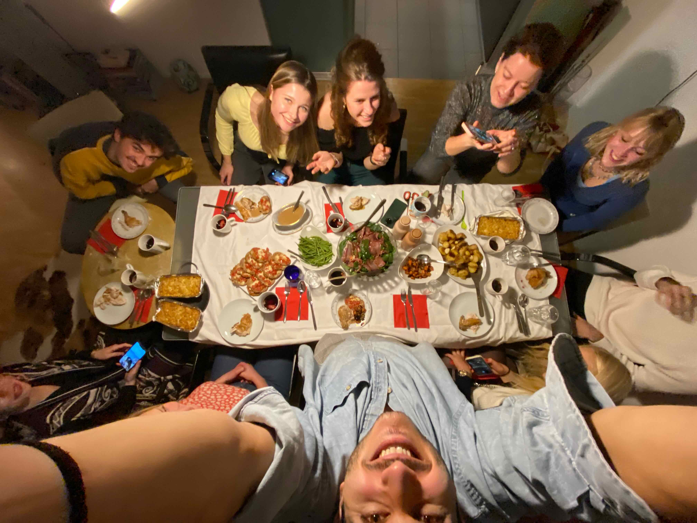
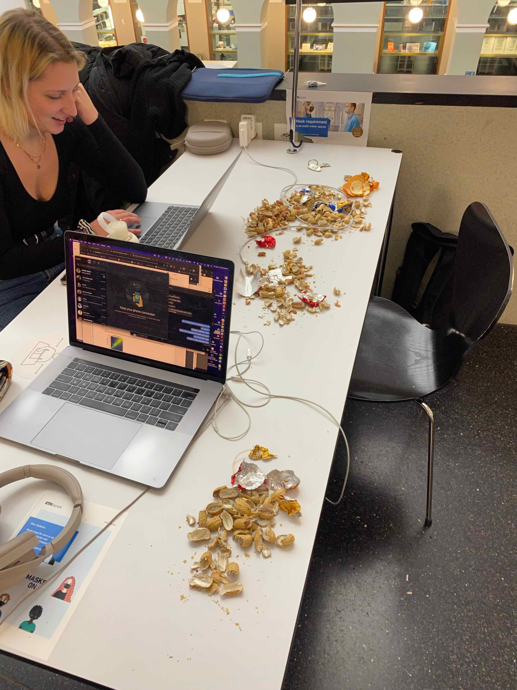
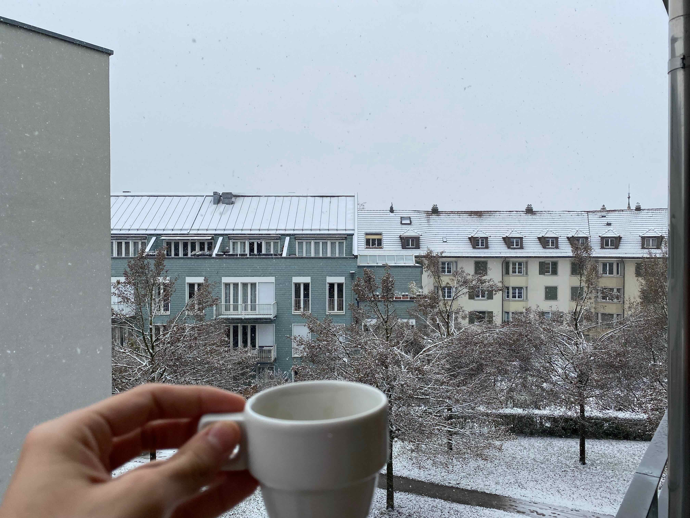
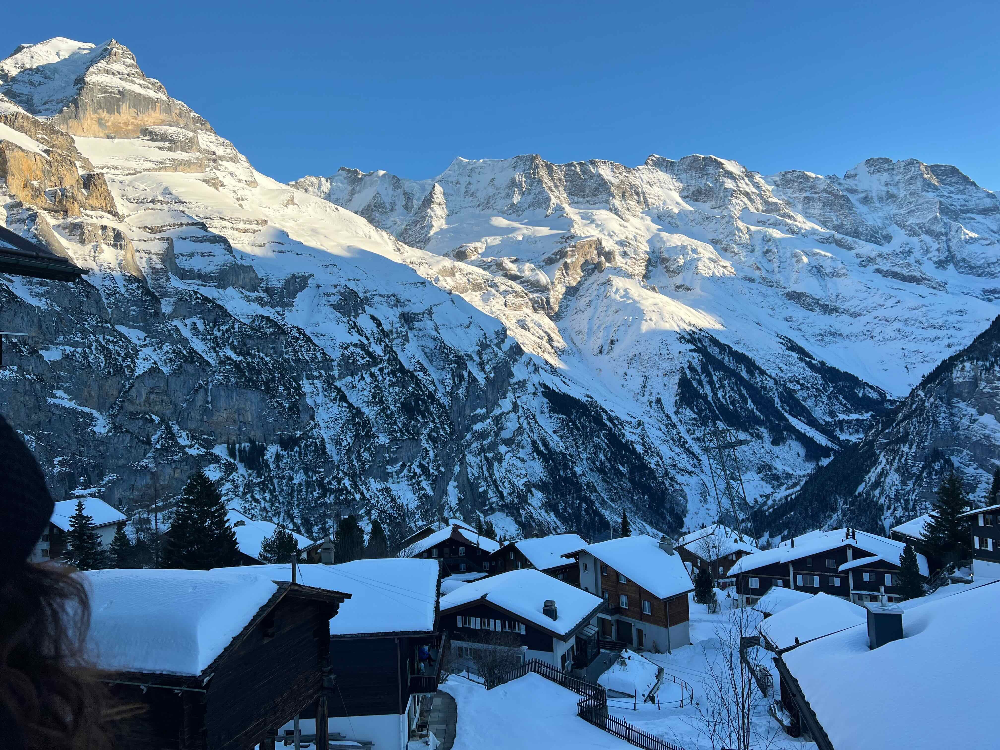
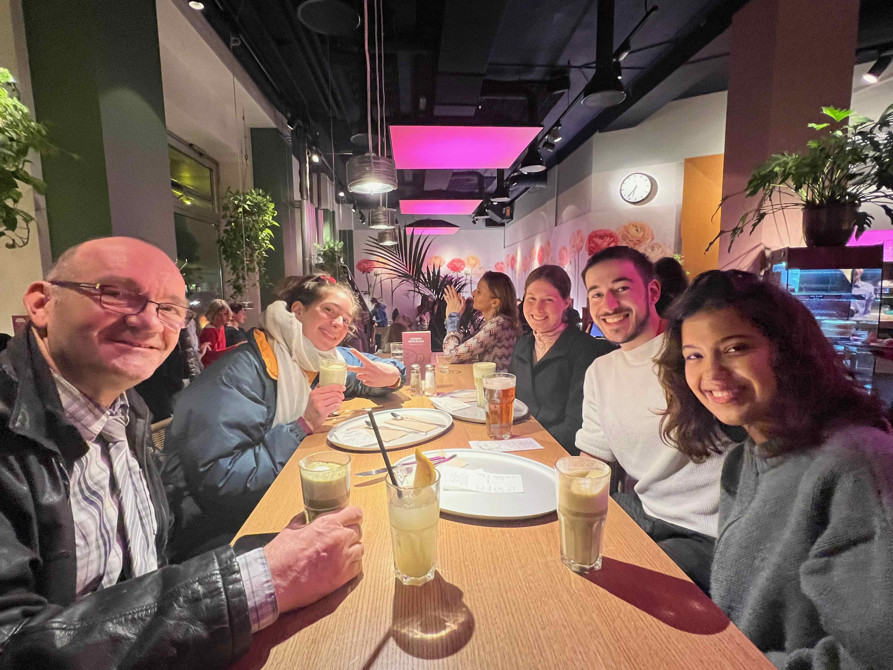
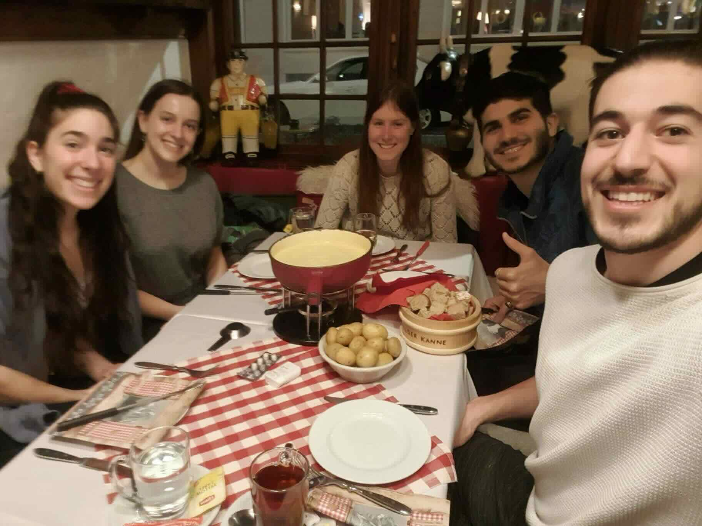
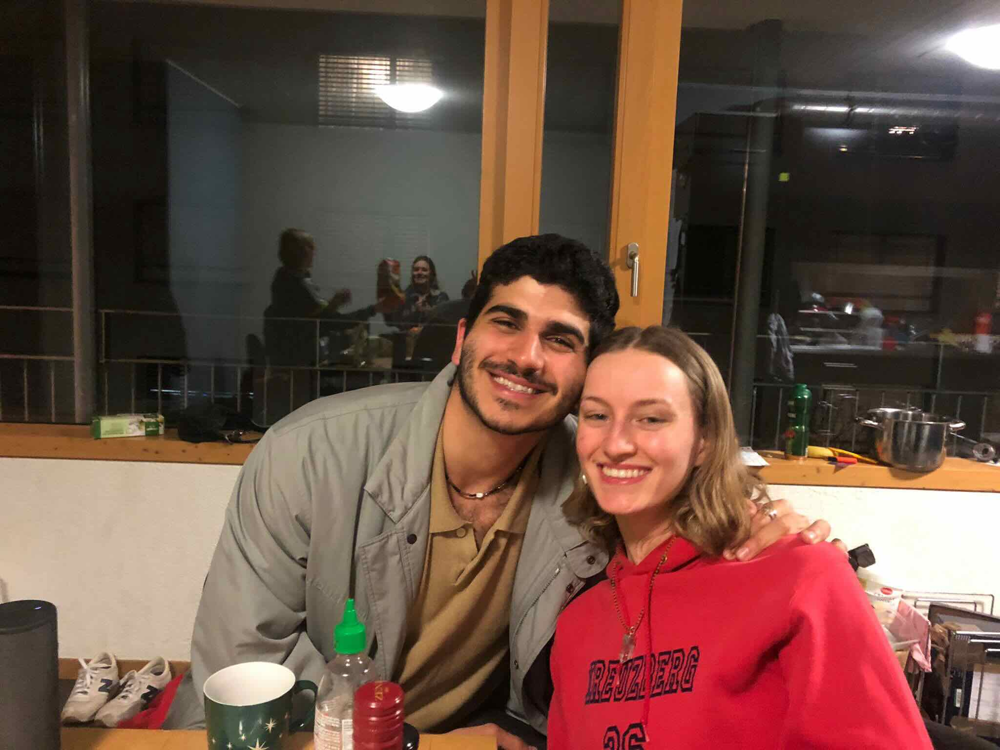
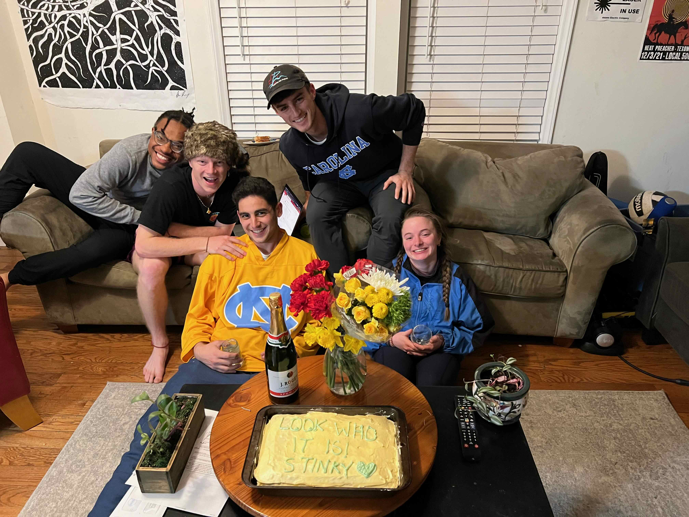

letter to zurich
previous
Zurich, Switzerland
I’ll be totally candid. I’m writing this in April. I’m putting finishing touches in July. And I left Zurich back in February.
It’s not for lack of putting aside time to sit idly on my laptop and click around until some clickable thing demands lengthy attention. I’ve been doing that: roughly every day for a few hours I sit here, know deep within me that I want to write about Zurich, and instead continue working on theoretical research questions for Advisor Pycia, or write the story I’m working on, or watch 3B1B videos. It’s hard to condense months of ideological changes, of being alone, of making new friends (and fighting thousands-of-miles-distance to keep old ones) into one post. To talk about Mohammed and Beatrice and Celli and Luisa and Tom and and and. To integrate the people into a format that clicks, that sings their praises, that flaunts how real they are, and how different they are from me.
I’ve spent enough time crafting narratives and watching them fall through the cracks, my writing-hands parachute failing to catch them before they’re gone forever. So right now, on this porch couch next to Molly, digesting the Durham favorite Namu, I’m setting a twenty-five minute timer, and I am going to write, and we are going to see what words bind together. And hopefully the words are ones that forever embellish the Mnemosyne tombstone marking my time in Zurich.
Begin.
I never had to go to Zurich. That’s the crazy thing in hindsight. I had been granted the grant from the Morehead-Cain Foundation, who solely prescribed that I research something that enhanced my “Global Perspective” on the world. At the time of application (and still) my research interest was the use of market-design theories on modern systems with poor allocation systems, most notably (most notably a poor allocation system; most notably an interest of mine) the refugee crisis. I’m far more competent in the simulation side of research than in the theory side (probably good practically, but bad for publications), so I figured I should sink my teeth into something out of my academic comfort zone for a few months. Working with Marek Pycia checked all the boxes: two-sided matching with practical applications in the refugee crisis, working mostly in mathematical theory, based in Switzerland. I was going to live alone, and it was going to be hard.
If it came to it and I emailed Marek and said I couldn’t make it to Zurich, he would’ve understood. The world was battling COVID, the Swiss government was in a duel with the gods of haste, and I was due for an actual job. But I wanted to go, and I waited until the government said I could. Finally, in November, I arrived.
Now, there is a meaningful distinction between the government approving my visit and the University of Zurich being ready for me. There are two obvious problems if a mostly unpaid job isn’t ready for you and you show up anyway: does the job have work for you?, and can they give you any benefits (**like housing**) in time? In academia, there's always work to be done; we had that part covered. But the benefit I couldn't get in time? Housing.
So what did this mean? I had to keep staying in hostels––Swiss German ones, i.e. ridiculously expensive ones––until they could find me a place. This wouldn’t be a big deal if I weren’t tired out of my mind of 16-bedroom rooms, of showering with dead roaches. In the first week of my time in Switzerland, I stayed in three different places––a hostel, a hotel (so I could sleep well before the Rhodes interview), and an apartment-hotel hybrid which, while it cost more than the hostel, had a merely performative difference, and had perhaps even filthier sheets. In these few days I met Pleuni, a biomechanics graduate student at the nearby ETH (“MIT of the East,” they say), a guy named Winnie while on the look-over-Zurich Uetliberg hike (he watched me slip off the ice in my chacos––I still had just my hostel-backpacking summer wardrobe, mind you––and we walked and talked together after he helped me up), and Patrick, Jonas, Ana, and others. During this time, I got the Rhodes, celebrated the Rhodes with a solo dinner out––pork knuckle and two beers for $110 USD––and went back to sleep in my hotel alone.
Once UZH got me my own place (a two-bedroom apartment overlooking the town of Oerlikon, a few miles north of downtown Zurich) my wellbeing somehow got worse. Weird, but I felt awfully alone.
Alongside the general how well things are going around me, I’ve found there are two forces that determine my happiness: how cool of an environment I’m in, and who’s around me to reflect the beauty of my days back onto me. The former is well stated in the public sphere––traveling is vacation, the beach is bliss––and that part was more than fulfilled. But the weight I place on the latter might be a little unpopular. I love doing things with people. You might be self-sufficient. But alternatively, I’m not.
I remember, early in my travels, I was sad and alone, strolling the streets of somewhere (truly I don’t remember) and I called my friend Sam, Eastern philosophy wiz and nerd. We talked about the Emerson / Thoreau / learn-to-be-happy-in-your-isolated-cabin effect shed to people around the West. He shared with me that self-sufficiency isn’t ubiquitously valued, and that dependency is an especially appreciated POV in Eastern thought. He told me it’s okay to feel lonely, that I probably should, and pointed out wisely––as I think about to this day––that the truest versions of ourselves are not locked away in our brains, but emerge when interacting with others and the environment around us. I think that was Hegel. The timer is still going—let me not delay.
And so, to explain why I suddenly felt worse: while I was in an incredibly cool place, there was an especially heightened degree of loneliness. I wanted to share the beauty with people, but struggled cracking people, even communicating. It was freezing cold, COVID was still around, and Swiss German is wildly difficult to learn. I lived alone, and I worked alone. There was no outside force pushing me to seize the days.
I’ll skip the weeds and get to the garden: like any journey, consistency, it seems, was key. I went to basketball open gyms four times a week. I joined the handball club. I went to a jazz dance course, hung out at coffee shops. Befriended the barista at Kafischnaps, went there a hundred times. Went on hikes, got awfully close with the late-night cashier at the EuroStar, enjoyed walks with faculty. Hosted backpackers, took day-trips to Lucerne and Bern and Lausanne, went swimming in Lake Zurich. I built a home out of a big place and out of the people I met along the way.
There are a few images of home that I would like to share.
Thanksgiving, November 2021
I met Pleuni in late November. We talked for hours about how Dutch she is and why she thinks Americans (especially American guys) are unbearable. I told her she should see Americans at Thanksgiving, she said wat. One thing led to another, and partly to see if I was telling the truth and partly to see how funny it could be, she offered to convert her Friday-night dinner plans into a Thanksgiving bash and bring me as the prize American.
It wasn’t exactly what I was going for, but my first glimpse of home came in the form of an arguably very toxic American holiday.
Peanuts, December 2021
Jana and I found a buffet of peanuts in the fourth-floor kitchen of the UZH Health Science Library and converted our study table into a plate.
Morning espresso off the balcony, December 2021
Every morning I poured my espresso shot from the maker left in the apartment, opened the sliding door to the outside, and stood over the edge leaning over the snow. Around this time I thought that Zurich was no more to me than the homey parts of a house––nooks, comfort zones––but without the other parts, like the infrastructure needed for long term survival, like food in the fridge. These morning espressos––silent, every morning––were very comfortable, very homey.
The guys who work at Zuri Bistro, December 2021
On a handful of walks I practiced saying these guys’ names to myself––Aga, Ares, Coco––just so I could greet them correctly. We knew nothing about each other, had shared only the same words over and over (“HEYYY!”, “Hallo!”), but they still insisted using my hands for a marketing video and giving me discounts. If I can convince you of anything, it’s to please see my friends over at Zuri Bistro (on Schaffhauserstrasse).
Handball beers, January 2022
Handball is awesome, mandatory handball beers afterward is more awesome. Over the course of a few weeks I got close with a guy named Lukas, who taught me about his year in the Swiss army, and more about the gun he got afterward. Once or twice a week, ten or so dudes sitting around a table, drinking a few beers, talking about nothing. Felt like Ohio.
Basketball, January 2022
One guy pulled me aside and told me I play just like Mike James. Just like Mike James, he said. Who is Mike James, you ask? The MVP of the EuroLeague. Just like Mike James, just like Mike James, I hear him whisper still.
The Ski Trip, February 2022
In the chronology of things, this is where everything turned around. Pleuni made a group chat with people she wanted to ski with. Someone said something along the lines of “If you want to ski, say I!” and just a few people responded. So Pleuni instead said if you don’t want to ski on this weekend, leave the chat. I had forgotten to respond, and next thing I knew, I got an email from SplitWise saying I owed $400 for mass transport and for a hostel halfway up the Gimmelwald ski village that we booked out.
On this wild weekend, I got close with Celli, the roommate of Pleuni’s classmate, who lived a floor below me. I met Luisa, who Celli met at a club somewhere in Zurich. Tom and I bonded over shared appreciation for the blue ski runs. I had my first raclette (actually made it myself, somehow), watched Viviane totally eat it off a cliff (she was fine, somehow), and had fun.
With two weeks left in Zurich, I found my group, and everything changed.
Flipping Lotte, February 2022
Dinner parties, February 2022
Every night over my last two weeks in the Z. Generally planned at mine, always held at Celli’s.

The Swiss French, February 2022
Luisa and I went for a swim in the freezing cold Lake Zurich. There were some Swiss French people a few yards down from us, far less timid of the water than we were, with whom we started chatting––two of them were making fun of us for calling the water "warm," the other we couldn't understand literally at all. Around this time, an old man walked behind us, and then walked behind us again, and I called out that he should join. I joked with Luisa that if he walked by one more time, I’d invite him to drinks, and I'd ask the folks next to us.
Next thing we knew… 
The Swiss French bunch learned I hadn't tried fondue. I'm lactose intolerant, I say! Truth be told it's really just expensive; I eat cheese when it's in front of me and ice cream whenever I feel like it. But they were outraged, and convinced me to come eat fondue with them. And they treated me, saying that when I show them around my home I have to return the favor.
Mohammed, February 2022
I went to the nearby EuroStar to get groceries (mainly beer) about twice a week. The night cashier (on staff when I’d usually go) was named Mohammed––a Turkish man who spoke enough Swiss German but with whom I shared only a few unique words. Hey, hello, how are you, good to see you––that stuff. He always checked out my beers with a smile on his face.
So with a few days left in my stint in Zurich, I told Mohammed I would be heading back to the States. I had been planning a shebang at my apartment (but as these things go, it was to be held at Celli’s) and I told Mohammed to join for a drink. I didn’t think he’d come. Instead, he proposed dinner––which I couldn’t make unfortunately––and he did show up. Everyone was like “who’s this guy?” as he proceeded into a monologue, saying that not many people speak to him while he works, and how grateful he was that I did. He apologized for not bringing a gift and said he would love to show me around his home (Istanbul) sometime. Until next time, he said.
Beatrice’s necklace, February 2022
It's pretty hard to put this one into words. “IamnotreallysurehowtoshowyouIcarebutImadeyouthisnecklacehereyougo,” said Beatrice. And she held out a necklace in her sweet hands.
--
And then I flew back to the states to the home with all my best friends in it. They demanded I tell all the stories that made Zurich a home, to talk about the people, sing their praises, and show the photos and videos that flaunt how real they are.
